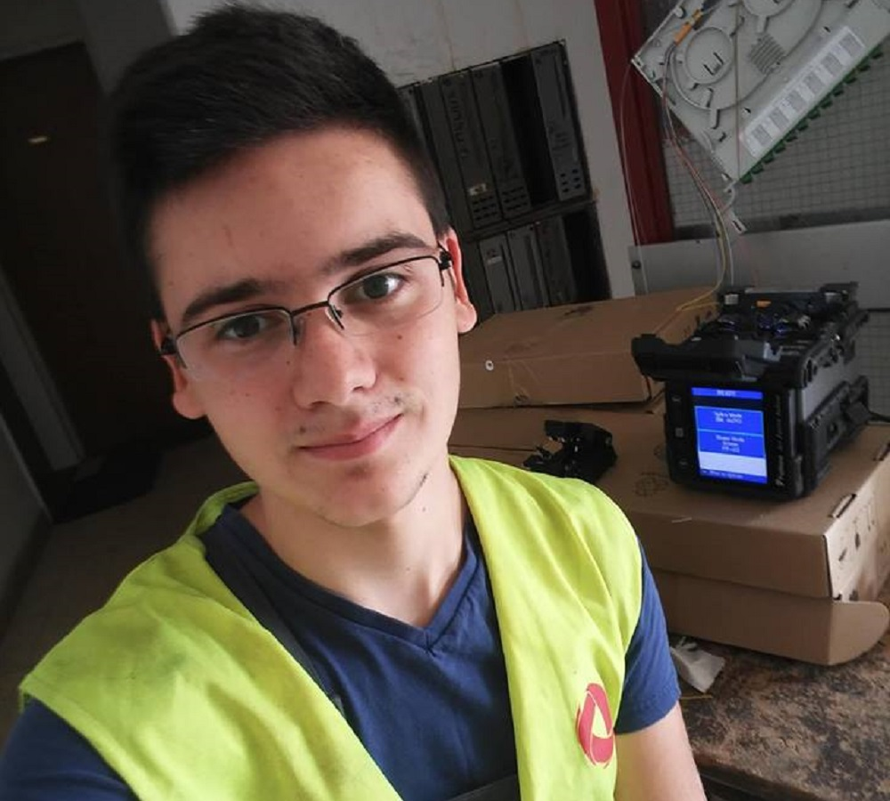
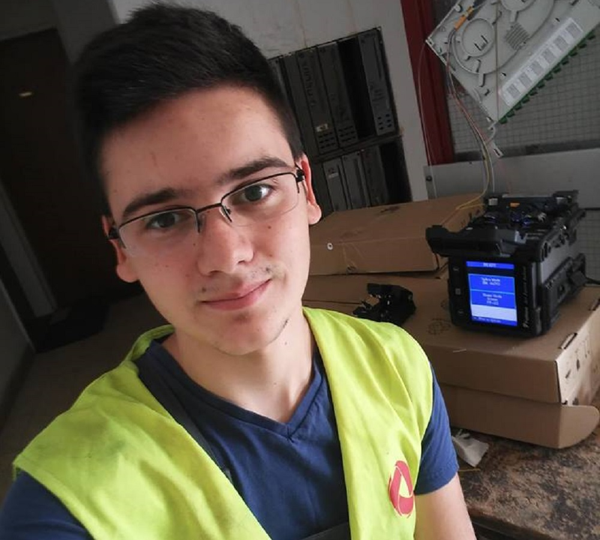

Preko letnjeg raspusta radio sam u telekomunikacionj firmi Kablink koja se bavi instalacijom TK mreža,
radio sam na projektu FTTH (optika do kuće) koju sprovode MTS i Huawei. Radio sam sve vrste poslova
koji ovakav projekat podrazumeva. Splajsovanje optičkih vlakana, instalaciju uređaja, sprovođenje
kablova od centrale do korisnika putem kablovske kanalizacije i razne vrste merenja i provera. Ovo je
bilo jedno veoma lepo iskustvo za mene gde sam naučio puno novih stvari i uvideo kako stvari o kojima
smo samo pričali u školi funkcionišu u praksi.

Kablink

Ovo je firma koja stalno ima otvoren konkurs za radno mesto i uvek joj fale radnici. Radio sam na mestu
operater u proizvodnji gde sam pakovao sladolede, prebirao grašak, krunio kukuruz i čistio buraniju od
svega što nije buranija. Čisteći buraniju uhvatio sam dve zmije po čemu sam i postao poznat u Frikomu.
Raditi u Frikomu nije lako, sve zavisi od posla koji radite, ali svkakao je zanimljivo jer se upozna
dosta ljudi. Najviše sam voleo da radim na buraniji jer je imalo određene benefite. Rad u frikomu mi je bio prvi
posao u životu.

Frikom